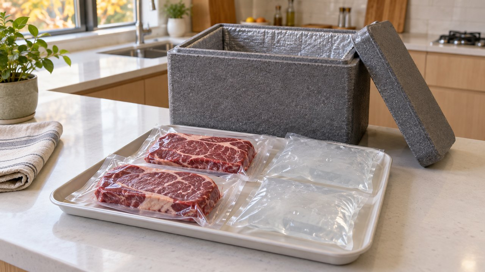
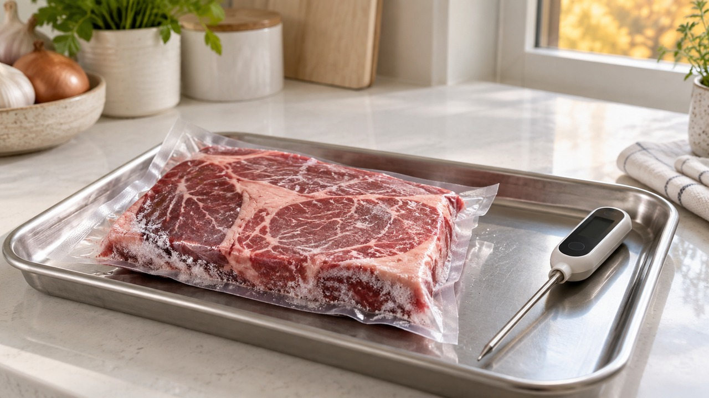
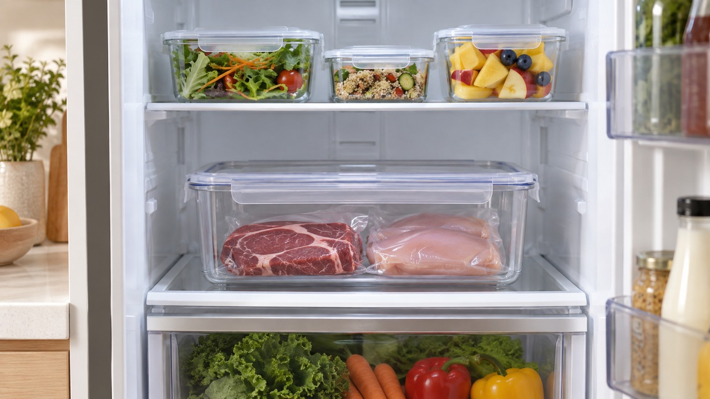
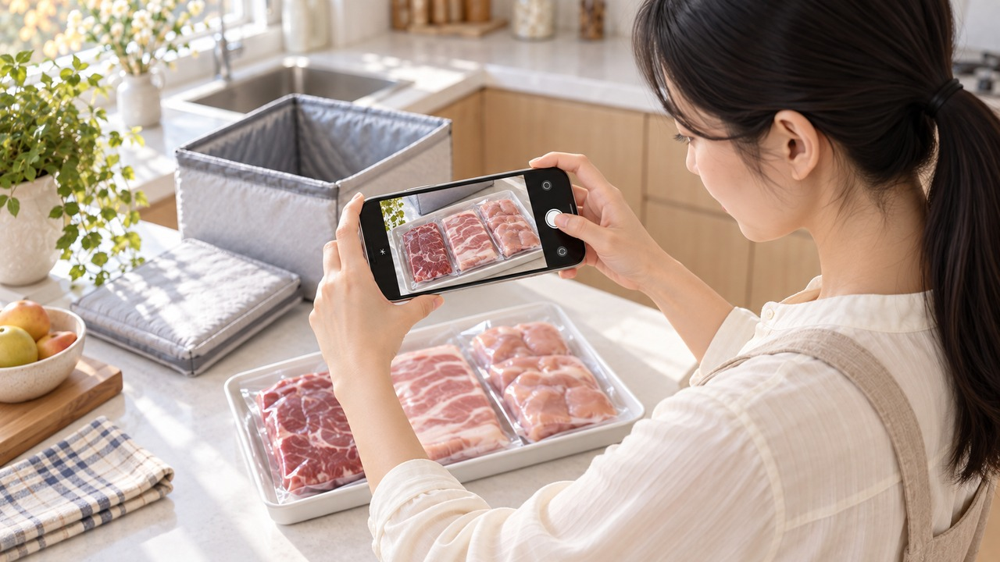

스티커 안내는 편집용입니다. 본문 복사에서는 제외됩니다. 사진은 images 폴더에서 순서대로 첨부하세요.
고기 택배 상함 걱정될 때, 추석 선물 아이스팩이 녹았다면 확인할 3가지

택배로 받은 고기가 상했을까 봐
선물 상자 앞에서 멈칫하셨나요?
추석 선물 아이스팩이 녹았다면
고마운 마음 옆에 걱정도 따라붙지요.
“비싼 갈비인데 버리기는 아깝고,
일단 얼려두면 괜찮지 않을까?”
에디터 혀니도 이런 고민에는
덜컥 괜찮다고 말씀드리기 어렵습니다.
아이스팩은 고기를 차갑게 유지하도록 돕지만,
그것만 보고 안심할 수는 없거든요.
냄새보다 먼저 살펴볼 것은
표시·포장, 고기 온도, 시간입니다.
선물 포장의 냉장 표시부터 읽어요
첫째, 이 선물이 냉장 상품인지
냉동 상품인지부터 구분해 보세요.
냉장 한우를 받고 덜 얼었다고 놀라는 것과
냉동 갈비가 미지근하게 온 것은 다르니까요.
겉상자만 보지 말고 안쪽 포장의
보관 방법도 함께 읽어주세요.
비닐이 찢어졌는지, 육즙이 새는지,
포장이 벌어졌는지도 살펴봅니다.
상자 바닥이 젖었다면
안쪽 고기 포장도 손상됐는지 보세요.
겉상자가 멀쩡해 보여도
안쪽 포장은 따로 확인하는 겁니다.
식약처의 냉장축산물 배송 안내도
차갑게 배송하고 바로 받아 보관하도록 안내합니다.
도착하면 상자를 바로 열어 살펴보고,
문제가 없는 고기는 표시대로 보관해 주세요.
녹은 아이스팩보다 고기를 살펴요

둘째, 보냉제를 만지던 손을 잠깐 멈추고
고기 자체가 어떤 상태인지 봅니다.
미국 정부의 식품안전 정보인
FoodSafety.gov 배송 안내에서는
수령할 때 식품용 온도계로 확인하도록 합니다.
냉동 상태나 얼음 결정이 남은 상태,
또는 냉장 수준으로 와야 한다는 설명이지요.
이 기관이 안내하는 냉장 수령 기준은
약 4.4℃ 이하(40°F)입니다.
미국의 가정용 안전 안내 수치이며,
국내 모든 상품의 교환 기준이라는 뜻은 아닙니다.
손으로 만진 느낌만으로는
온도를 알기 어렵다는 점도 기억해 주세요.
택배 고기가 상한 것 같을 때
“냄새가 없으니 괜찮다”는 말도 자주 떠오릅니다.
하지만 미국 FDA는 겉모양이나 냄새가
멀쩡해도 먹고 탈이 날 수 있다고 안내합니다.
괜찮은지 알아보려고
한 점 구워 맛보지는 마세요.
받았을 때 미지근하거나 상태가 의심된다면,
식사에 쓰지 말고 보낸 곳에 먼저 알려주세요.
도착 문자와 개봉 시간을 나눠 적어요
셋째, 택배가 도착한 시각과
내가 열어본 시각을 각각 적어봅니다.
어제 발송된 상자를 오늘 바로 받은 것과
어제 온 상자를 오늘 발견한 것은 다릅니다.
배송에 걸린 시간만 보고
고기가 그동안 내내 따뜻했다고 볼 수는 없어요.
다만 오랫동안 문 앞에 있었고
고기마저 미지근하다면 이야기가 달라집니다.
FDA는 냉장이 필요한 음식을 실온에
2시간 넘게 놓지 않도록 안내합니다.
주변이 약 32.2℃(90°F)보다 더우면
그 안내 시간은 1시간으로 짧아집니다.
다만 아이스박스 안에서 차가웠던 시간까지
실온에 둔 시간으로 계산하지는 않습니다.
상했을까 봐 걱정되는 고기를
뒤늦게 냉장고에 넣었다고 안심하지는 마세요.
다시 차갑게 만들어도
밖에 오래 두었던 사실은 달라지지 않으니까요.
처음 받았을 때의 상태를 모른다면
지금 차갑다는 이유로 먹어도 된다고 판단하지 마세요.
사진에는 상자와 고기 포장을 담고,
도착·개봉 시각을 짧게 덧붙여 전달하세요.
식약처의 2026년 명절 안내도
해동한 식품을 다시 얼리지 말라고 설명합니다.
녹은 고기를 나중에 먹으려고 다시 얼리기 전,
제품의 보관·취급 표시부터 확인해 주세요.
문제가 없는 고기는 표시대로 바로 보관하고,
육즙이 다른 음식에 닿지 않게 분리해 주세요.

식약처는 오래 자리를 비워 받기 어렵다면
냉장축산물 주문을 피하도록 안내합니다.

선물을 보내는 분이라면 미리
“언제 집에서 받을 수 있어요?”라고 물어보세요.
받는 날 냉장고 한 칸을 비워두는 것도
고마운 선물을 맞이하는 좋은 준비입니다.
여러분은 도착 알림을 켜두는 쪽인가요,
가족에게 수령을 부탁하는 쪽인가요?
어떤 준비가 편했는지 댓글로 나눠주세요.
가족의 식탁을 챙기는 에디터 혀니였습니다.
#고기택배 #추석고기선물 #고기택배상함 #아이스팩녹았을때 #냉동고기택배 #고기수령확인 #고기포장확인 #추석선물보관 #식품안전 #명절식탁 #에디터혀니 #꿀단지